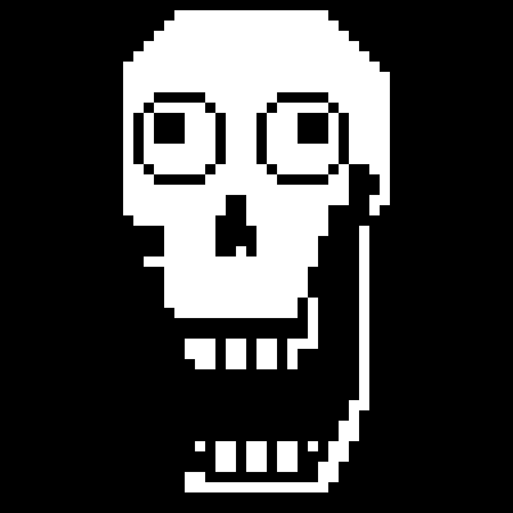
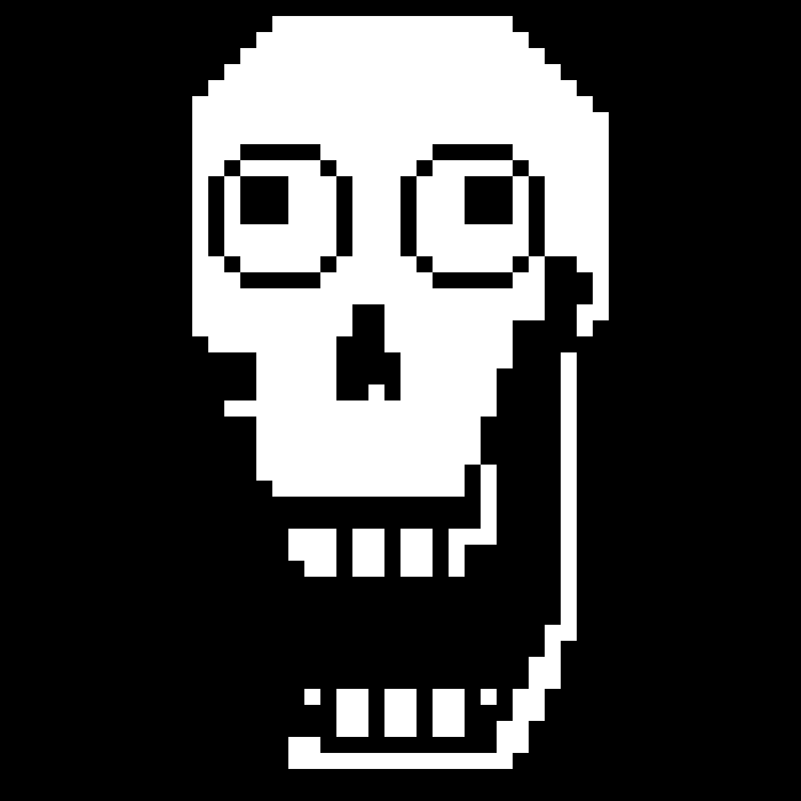

Санс
Санс - самый крутой скелет!

Санс - крутейший персонаж игры Undertale, известный своим юмором и ленивым отношением к жизни. Он является братом Папируса
Санс - крутейший персонаж игры Undertale, известный своим юмором и ленивым отношением к жизни. Он является братом Папируса